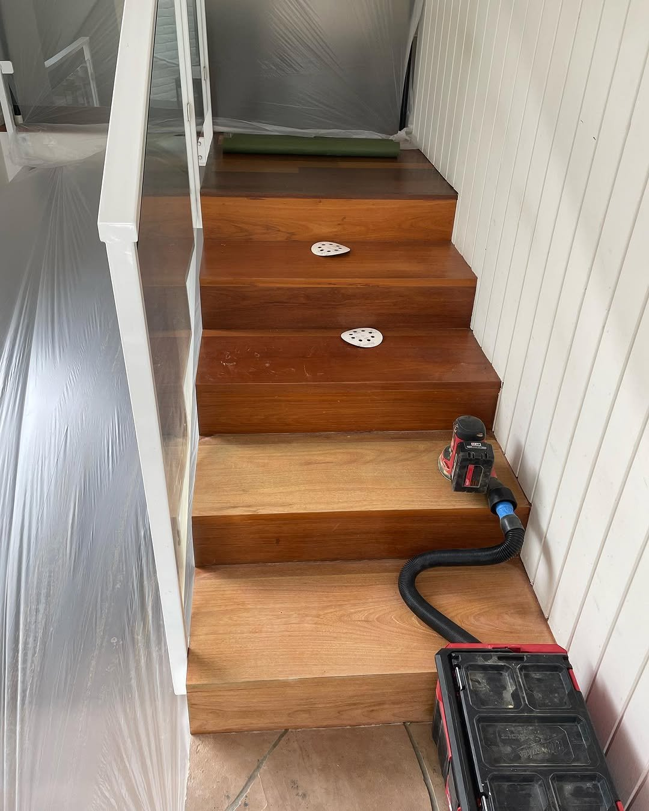

Herringbone & Custom Pattern Flooring
Pattern Flooring That Commands Attention
A herringbone floor is not just a floor. It is a statement. The interlocking zigzag pattern has been used in European architecture for centuries because it creates visual movement and depth that a straight-lay floor simply cannot achieve. When done right, a herringbone installation transforms an ordinary room into something that stops people in their tracks.
Top Tier Custom Floors specializes in herringbone and custom pattern installations across San Diego and Orange County. This is not work that every flooring company can do. Pattern installations demand a level of precision that most installers have never practiced -- every plank must be perfectly aligned, every angle must be exact, and the layout must be calculated from the center of the room outward to ensure symmetry. One degree off, and the pattern falls apart visually over the length of the room.
We take it further with custom inlay work. Brass strips between herringbone rows. Marble medallions at entryways. Metal borders that frame a room. These are the details that turn a beautiful floor into a one-of-a-kind piece of craftsmanship.

Herringbone, Chevron & Beyond
Every pattern has a different character. We help you choose the one that fits your space.
Herringbone
The classic. Rectangular planks are laid at 90-degree angles in a staggered zigzag pattern. Herringbone works in hallways, living rooms, dining rooms, and entryways. It pairs exceptionally well with contemporary and transitional design styles. The pattern creates a sense of movement that draws the eye through the space. We typically use planks in the 3 to 5-inch width range for herringbone -- wide enough to show the grain, narrow enough to maintain the visual rhythm of the pattern.
Chevron
Chevron is herringbone's sharper cousin. Each plank is cut at an angle (usually 45 degrees) so the ends form a continuous V-shape rather than a staggered break. The result is cleaner, more modern, and more directional. Chevron is popular in high-end Rancho Santa Fe and Del Mar homes where the design leans toward European minimalism. It requires more precision and generates more waste because every plank needs an angled cut at both ends.
Custom Inlay Work
This is where Top Tier stands apart. We design and install custom inlays using brass, stainless steel, marble, and contrasting wood species. A thin brass strip running between herringbone rows adds a subtle metallic accent. A marble tile inlay at the entry creates a defined threshold between the foyer and the main floor. Metal borders can frame a room or define a specific zone within an open floor plan. Every inlay is hand-fitted and precisely routed to sit flush with the surrounding wood.
How Pattern Installation Works
Design Consultation & Layout Planning
We discuss pattern direction, plank size, wood species, and any custom inlay work. We measure the room and create a layout plan that ensures the pattern is centered and symmetrical. For rooms with angled walls or irregular shapes, this planning stage is critical.
Subfloor Preparation & Reference Lines
The subfloor is leveled and prepped to tighter tolerances than a standard installation. We snap precise reference lines from the center of the room, establishing the starting point for the pattern. These lines are the backbone of the entire installation -- every plank is aligned to them.
Pattern Installation
Each plank is individually placed, glued, and (if applicable) nailed. We work outward from the center lines, constantly checking alignment with a straight edge. Any drift is corrected immediately. For inlay work, we route channels into the hardwood with a precision router and hand-fit each inlay piece before securing it with adhesive.
Border Installation & Transitions
Most pattern floors benefit from a border -- a straight-lay frame of planks that surrounds the pattern and creates a clean transition to walls and adjacent rooms. We cut border planks to fit precisely against the angled pattern edges. Transitions to other rooms are handled with matching T-moldings or flush reducers.
Finishing & Detail Work
If using unfinished wood, we sand the entire floor as one surface to ensure the pattern is perfectly level, then apply stain and finish coats. For prefinished products, we fill any micro-gaps, clean thoroughly, and do a final inspection. Every transition, inlay edge, and border joint is checked for flush fit and clean lines.
Pattern Projects

A Zero-Competition Opportunity
Herringbone flooring is one of the fastest-growing design trends in Southern California, and very few installers in the San Diego market have the skill to execute it properly. Most flooring companies either do not offer pattern installations or subcontract the work to a third party with unpredictable results.
At Top Tier Custom Floors, herringbone and custom patterns are a core specialty. Stone Peters has spent years perfecting the precision techniques required for tight, consistent pattern work. The result is a floor where every angle is exact, every joint is tight, and the overall pattern flows seamlessly across the room.
If you are building or renovating a home in Rancho Santa Fe, Del Mar, La Jolla, Carlsbad, or anywhere across San Diego County and want a floor that sets your home apart, herringbone is the move. It adds measurable resale value and creates a visual impact that photographs beautifully and impresses in person.
Herringbone & Pattern Flooring FAQ
Herringbone uses rectangular planks laid at 90-degree angles, creating a staggered zigzag where plank ends butt against the sides of adjacent planks. Chevron planks are cut at an angle (usually 45 degrees) so the ends meet in a continuous V-shape down the center line. Chevron creates a cleaner, more modern look while herringbone has a more traditional, textured appearance. Both require precision installation, but chevron demands more exact cuts since every angle must match perfectly.
Herringbone installation typically costs 20-40% more than a standard straight-lay installation. The additional cost comes from increased labor time (each plank must be individually placed and aligned), higher material waste (10-15% vs. 5-7% for straight lay), and the precision required for layout. A herringbone floor in a 500 square foot room might take twice as long to install as a straight-lay floor in the same space. Custom inlay work with brass or marble adds further to the cost depending on materials and complexity.
Herringbone installation takes roughly twice as long as a straight-lay floor of the same size. A 1,000 square foot herringbone project typically takes 5-8 days, compared to 3-4 days for a standard installation. Projects with custom inlays, borders, or mixed materials can extend the timeline further. The extra time is not wasted -- it is the precision work that makes the pattern look right. Rushing a herringbone installation leads to visible alignment errors that are impossible to fix without tearing up the floor.
Yes, and we actually recommend engineered hardwood for most herringbone installations in San Diego. Engineered planks are more dimensionally stable than solid hardwood, which means they hold tighter joints over time as humidity fluctuates. Many manufacturers now offer engineered planks specifically designed for herringbone installation, pre-cut to the correct dimensions. We work with Duchateau, Garrison Collection, and other brands that produce herringbone-specific engineered products.
Herringbone floors require the same maintenance as any hardwood floor -- regular sweeping, damp mopping with a pH-neutral cleaner, and felt pads on furniture legs. The pattern itself does not create additional maintenance needs. However, because herringbone has more seams per square foot than a straight-lay floor, maintaining consistent humidity levels (35-55%) is especially important to prevent gaps from developing between planks.
More From Top Tier
Hardwood Flooring
Standard straight-lay hardwood installation with the same premium materials and precision.
Stair Installation
Match your pattern floors with custom stair treads and seamless multi-level transitions.
Sand & Refinish
Restore or change the color of existing hardwood and pattern floors.
Ready for a One-of-a-Kind Floor?
Get a free estimate for herringbone, chevron, or custom pattern flooring. Serving San Diego, Rancho Santa Fe, Del Mar, La Jolla, Carlsbad, and Orange County.